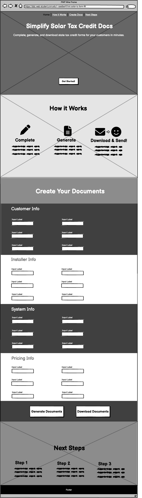

My one-page site will consist of the following sections:
Welcome Section: This section will mainly consist of a heading stating in a few words what the page is for and a sub-heading of one sentence to explain a little further what can be accomplished with the site. There will also be a navbar at the top of the page that will allow the user to jump to any section of the page, and a button below the subheading that will allow the user to jump straight to the section that allows them to begin filling out info for the documents. The background of this section will be a photo, something bright and solar related
How it Works Section: This section will consist of a heading and details of the 3 steps it takes to successfully use this website to generate documents. The three steps are fill, generate, and download. Each step will have an icon, a heading, and a short 1-2 sentence description going into a little more detail. The background of this will also be a photo, either solar related or something showing a happy customer or a stack of completed documents.
Data Entry Section: This section will be broken into four subsections for the four types of data needed to complete the documents. These subsections are customer info, installer info, system info, and pricing info. Each of these subsections will be visually separated from each other, and will contain titled data fields that make it clear to the user what information needs to be filled in. At the bottom of the section will be a "create documents" button and a "download documents" button.
Next Steps Section: This section will outline in simple, general terms what users can tell their customers in terms of their next steps, once they receive their documents. This will include a link to the submission website.
Desktop Layout
Mobile Layout